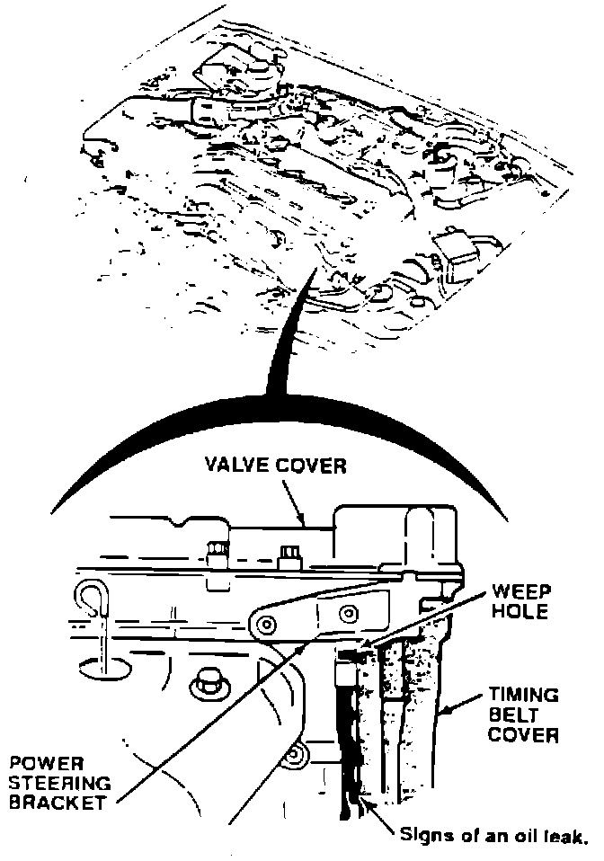
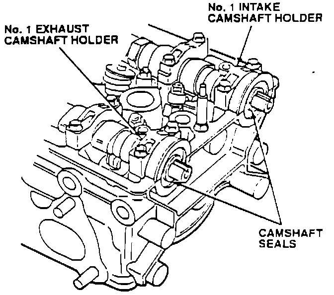
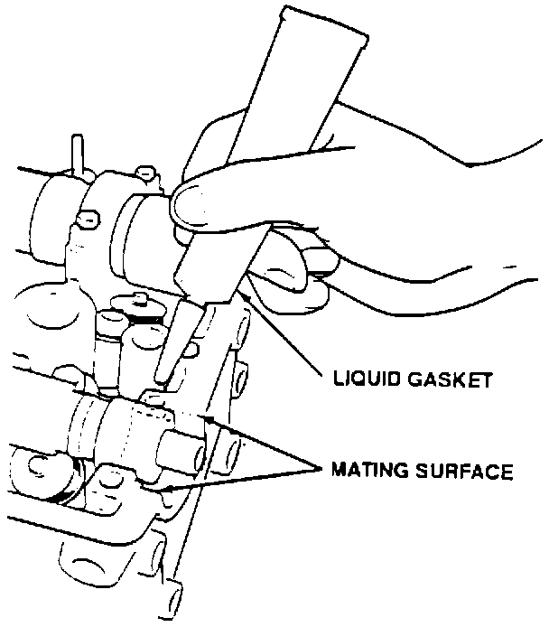
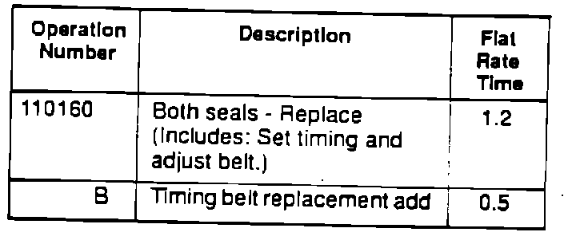

Camshaft - Oil Seal Leaking
December 16, 1991BULLETIN NO.
91-051
YEAR
1990-1991
MODEL
INTEGRA
VIN APPLICATION
See VEHICLES AFFECTED
Camshaft Oil Seal Leaking
SYMPTOM
Signs of an oil leak behind the power steering pump bracket between the engine block and the timing belt cover.
PROBABLE CAUSE

Camshaft oil seal(s) leaking.
VEHICLES AFFECTED
3-dr. up to VIN DA9 ... MS059693 4-dr. all
CORRECTIVE ACTION
Install improved camshaft oil seals (see PARTS INFORMATION).
1. Remove the timing belt and the camshaft pulleys as described in section 6 of the appropriate service manual.
NOTE:
There is a small possibility that the timing belt may have been contaminated with oil. Inspect the belt and replace it if it has been contaminated.

2. Remove the No. 1 intake and exhaust camshaft holders and remove the camshaft oil seals.
3. Clean the camshaft holders and camshaft oil seal seats on the cylinder head.
4. Apply a light film of white grease to the lips of the new oil seals. Carefully slide the seals onto the camshafts. Make sure the seal lips are not distorted and the seals are bottomed out in their seats.

5. Apply liquid gasket (P/N 08718-0001) to the cylinder head mating surfaces of the camshaft holders, then install the holders onto the head. Tighten the camshaft holder-bolts to 10 N-m (1.0 kg-m, 7 lb.ft.).
6. Install the camshaft pulleys and timing belt.
PARTS INFORMATION
Camshaft Oil Seal P/N 91203-PR4-004
WARRANTY INFORMATION
In warranty:
The normal warranty applies.

Out-of-warranty:
Any repair performed after warranty expiration may be eligible for goodwill consideration by the District Service Manager. You must request consideration, and get the DSM's decision, before starling work.
Failed P/N: 91203-PG6-003
Defect code: 051
Contention code: B06